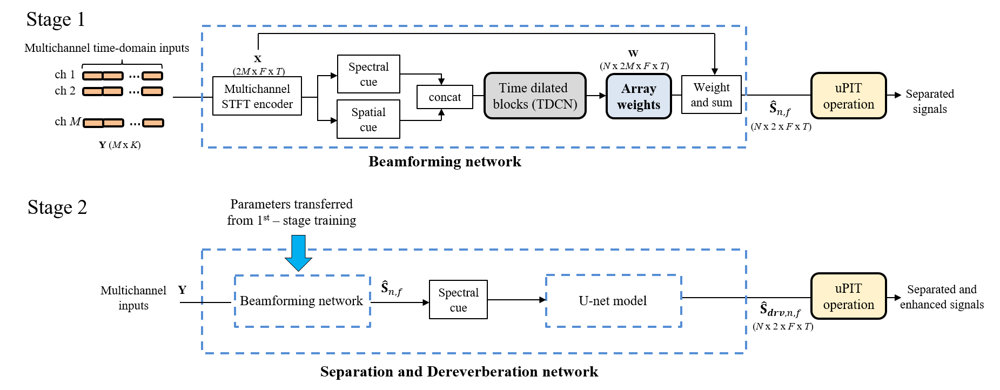

Multichannel Learning-Based Approaches for Sound Source Separation in Adverse Environments
You-Siang Chen,Zi-Jie Lin, Mingsian R. Bai
Department of Power Mechanical Engineering Engineering, National Tsing Hua University, Taiwan
Abstract
In this paper, a multichannel learning-based network is proposed for source separation and dereverberation in a reverberant environment. The network can be divided into two parts according to the training strategy. At the first stage, a model based on time-dilated convolution network (TDCN) is established to estimate the array beamforming weights for the multichannel microphone signals. Therefore, the output of the network is formulated by weight-and-sum operation on the basis of real-valued reformulation in the frequency domain. At the second stage, a U-net model is concatenated to the beamforming network to serve as a nonlinear mapping filter for simultaneous separation and dereverberation. In order to achieve better flexibility and performance, we derive the scale invariant mean square error (SI-MSE) as a frequency-domain version of scale invariant signal-to-noise ratio (SI-SNR). Moreover, the combined network is jointly trained with dynamically mixing the speech segments convoluted with room impulse responses (RIRs). Simulations are conducted for comprehensive multisource scenarios including subtending angle of sources and reverberation time (T60). The proposed network along with the baseline approaches are evaluated in terms of several objective evaluation matrices and the results show the effectiveness of the network and better performance on the task of dereverberation and separation.
Network arrchitecture

Audio Demo
Category A: T60s
Speech mixture (T60 = 0.16 s)
Speech mixture (T60 = 0.36 s)
Speech mixture (T60 = 0.61 s)
Speech mixture (T60 = 0.9 s)
WPE+MPDR (T60 = 0.16 s)
WPE+MPDR (T60 = 0.36 s)
WPE+MPDR (T60 = 0.61 s)
WPE+MPDR (T60 = 0.9 s)
WPE+TIKR (T60 = 0.16 s)
WPE+TIKR (T60 = 0.36 s)
WPE+TIKR (T60 = 0.61 s)
WPE+TIKR (T60 = 0.9 s)
WPE+IVA (T60 = 0.16 s)
WPE+IVA (T60 = 0.36 s)
WPE+IVA (T60 = 0.61 s)
WPE+IVA (T60 = 0.9 s)
The best proposed model (T60 = 0.16 s)
The best proposed model (T60 = 0.36 s)
The best proposed model (T60 = 0.61 s)
The best proposed model (T60 = 0.9 s)
Clean signals
Clean signals
Clean signals
Clean signals
Category B: subtending angles
Room-1 Near (Reverberant)
Room-2 Near (Reverberant)
Room-3 Near (Reverberant)
Room-1 Near (WPE)
Room-2 Near (WPE)
Room-3 Near (WPE)
Room-1 Near (UNet)
Room-2 Near (UNet)
Room-3 Near (UNet)
Room-1 Near (SkipConvNet)
Room-2 Near (SkipConvNet)
Room-3 Near (SkipConvNet)
Room-1 Near (Clean-Refernce)
Room-2 Near (Clean-Reference)
Room-3 Near (Clean-Reference)
Acknowledgements
The work was supported by the Add-on Grant for International Cooperation (MAGIC) of the Ministry of Science and Technology (MOST) in Taiwan, under the project number 107-2221-E-007 -039 -MY3.